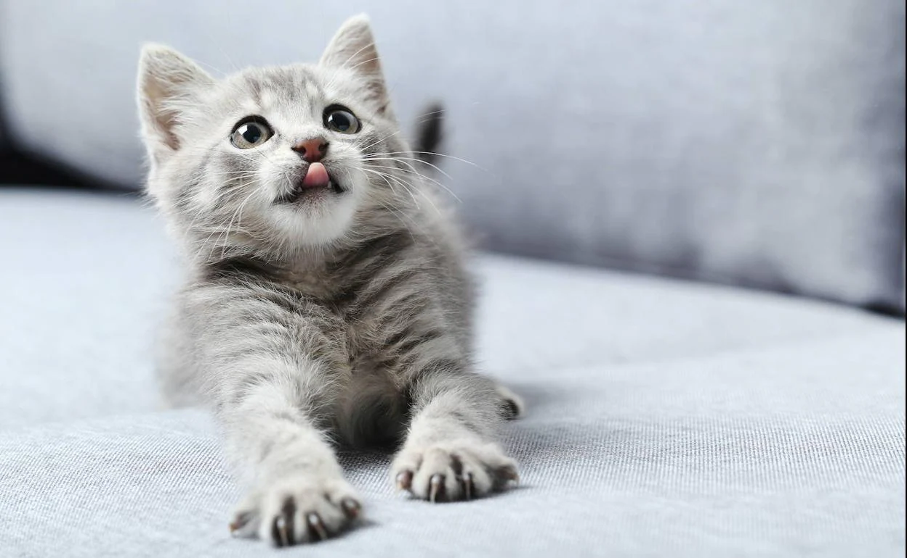
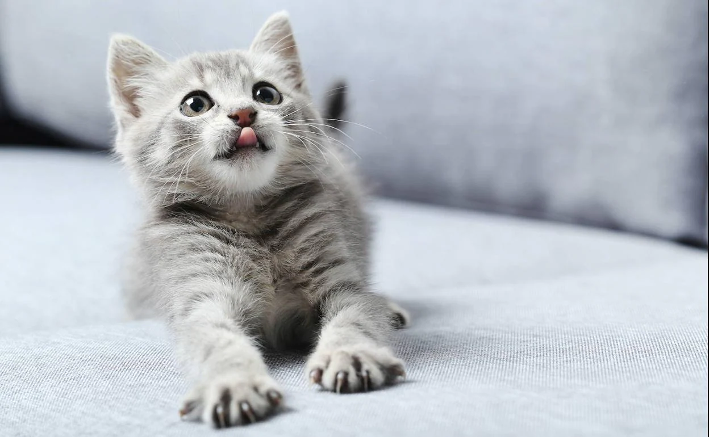
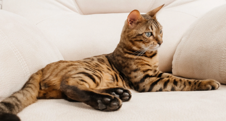
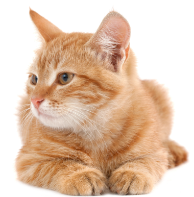
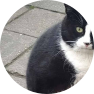
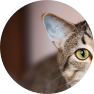

ejemplo@gmail.com
(809) 123-4567
 

Bienvenido
Gaterinaria es un hospital veterinario exclusivo para felinos con servicio
completo. Nuestra misión es brindar atención veterinaria de la más alta
calidad para su gato en un entorno relajado. Nuestra prioridad número uno es
ayudar a que su gato viva una vida feliz y saludable durante el mayor tiempo
posible.
Calle Francisco de Garay | Santo Domingo Este
LLAMAR PARA AGENDAR UNA CITA
VER NUESTROS SERVICIOS
Información de Contacto
Calle Francisco de Garay | SDE
Lunes a Viernes | 8 AM a 6 PM
Sábado y Domingo | 9 AM a 2 PM
(809) 123-4567
ejemplo@gmail.com
Horarios

SERVICIOS
Qué Hacemos
Ofrecemos atención médica completa que incluye atención preventiva,
detección temprana y tratamiento de enfermedades, atención dental y atención
quirúrgica.
Nos dedicamos a brindar atención individualizada y compasiva tanto a nuestros pacientes como a sus cuidadores. Entendemos que su gato no es solo una mascota, sino un miembro de la familia.
Nuestra prioridad número uno es ayudar a que su gato viva una vida feliz y saludable durante el mayor tiempo posible.
Nos dedicamos a brindar atención individualizada y compasiva tanto a nuestros pacientes como a sus cuidadores. Entendemos que su gato no es solo una mascota, sino un miembro de la familia.
Nuestra prioridad número uno es ayudar a que su gato viva una vida feliz y saludable durante el mayor tiempo posible.
Cuidado Preventivo / Vacunas
Servicios de Diagnósticos
Recomendamos realizar exámenes de bienestar al menos una vez al año hasta que tu gato cumpla 10 años. Una vez que alcanza esa edad, sugerimos un examen cada seis meses.
Durante estos exámenes, la Dra. Cacciottoli podría recomendar pruebas diagnósticas para determinar si tu gato está saludable o identificar la causa de cualquier enfermedad.
Cuidado para Gatos Mayores
Cuidado Dental
A los 10 años, tu gato es equivalente a un humano de 56 años. Por eso, recomendamos pruebas diagnósticas de rutina además de actualizar las vacunas, especialmente para gatos mayores.
En algún momento de la vida de tu gato, será necesaria una limpieza dental. Es importante mantener los dientes limpios, ya que la acumulación de sarro puede provocar bacterias e infecciones.
Procedimientos Quirúrgicos
Hospedaje y Grooming
Realizamos cirugías electivas como esterilizaciones y castraciones, así como procedimientos quirúrgicos para diagnosticar o tratar enfermedades, incluyendo extirpación de masas y cistotomías (cirugías de vejiga).
Ofrecemos hospedaje para nuestros pacientes durante todo el año en nuestras exclusivas unidades de condominios para gatos. También contamos con servicios limitados de grooming por cita, incluyendo cortes de uñas y rasurados higiénicos.
TESTIMONIOS
De nuestros visitantes
“Estas personas son el equipo de veterinarios amantes de los animales más
increíble con el que mi esposa y yo hemos tenido el placer de trabajar. Se
especializan en medicina felina y hacen todo lo posible para asegurarse de
que los miembros peludos de su familia reciban el mejor cuidado posible. Los
hemos utilizado durante años. ¡Reciben mi más alta recomendación!”
- Alguien
“¡El personal aquí es maravilloso! La Dra. Cacciottoli es estupenda, se
preocupa genuinamente por asegurarse de que los pacientes tengan una visita
lo más libre de estrés posible y también dedica una buena cantidad de tiempo
a explicarles a los ansiosos padres de gatitos cómo cuidarlos. Sus precios
son razonables y el personal de apoyo es excelente. ¡Definitivamente
recomiendo Cat Clinic para las necesidades de sus bebés peludos!”



- Otra persona